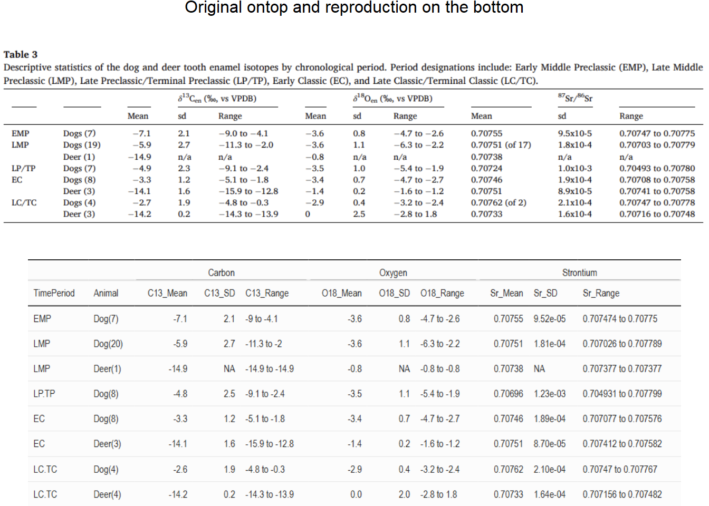

library(tidyverse)
library(ggplot2)
library(dplyr)
library(patchwork)
library(readr)
library(knitr)
library(kableExtra)
library(webshot2)
library(gridExtra)
library(grid)Data Replication Project
Citation:
Ashley E. Sharpe, Juan Manuel Palomo, Takeshi Inomata, Daniela Triadan, Flory Pinzón, Jason Curtis, Kitty Emery, George Kamenov, John Krigbaum, Jessica MacLellan, María Paula Weihmüller, An isotopic examination of Maya Preclassic and Classic animal and human diets at Ceibal, Guatemala, Journal of Archaeological Science: Reports, Volume 55, 2024, 104522, ISSN 2352-409X, https://doi.org/10.1016/j.jasrep.2024.104522
The Original Study:
This article attempts to answer a question that has plagued Maya archaeologists ever since they first understood the magnitude of these ancient civilizations: How did the Maya sustain their cities through time and fluctuations in the population? The authors emphasize that there was no “universal” Maya diet, and as such, there was a lot of variation in dietary patterns across sites and across time. Thus, they argue, Ceibal is an ideal site to examine diet and subsistence through time because it had a long occupation that spanned from 1100 BC to 1200 CE. Ceibal was a significant political and ceremonial Maya center that experienced significant changes during its long occupation, including periods of abandonment and reoccupation.
Methods:
To examine this, the authors aimed to understand the relationship between animals and humans, hoping to trace shifts in diet and animal management. Their methods involved using isotope analysis to get information about the samples. The study measured carbon, oxygen, and strontium isotope in dental enamel. Carbon (ùõÖC13) was used to trace maize consumption by determining the proportion of C4 plants in the diet, oxygen (ùõÖO18) was used to trace drinking water sources and estimate mobility, and strontium (Sr87/Sr86) was used to trace geographic origins based on regional geology. All three isotopes were measured for faunal samples, however only carbon isotopes were measured for the human samples.
The measured isotope values for animals and humans were then analyzed statistically. The authors present descriptive statistics of the dog and deer isotope values for carbon, oxygen and strontium organized by chronological order. The distribution of values for each isotope was also analyzed statistically for each animal. Student’s t-tests were employed on the carbon values for dogs and humans for each time period to compare the difference in diets over time.
Data Used:
The fauna data contained 63 samples from non-human mammals excavated in Ceibal. The samples were excavated from different archaeological contexts and represented various different time periods, from the Early Middle Preclassic (1000-700 BCE) all the way to the Terminal Classic (810-950 CE). These samples came from various different types of teeth (molars, premolars, canines, and incisors). These faunal samples came from the following animals:
- Domestic dog (Canis lupus familiaris): 45 samples
- White-tailed deer (Odocoileus virginianus): 7 samples
- Peccary (Tayassuidae cf. Dicotyles tajacu): 2 samples
- Baird’s tapir (Tapirella bairdii): 3 samples
- Large feline (possibly Panthera onca): 2 samples
- Margay (Leopardus wiedii): 1 sample
- Agouti (Dasyprocta punctata): 1 sample
- Paca (Cuniculus paca): 1 sample
- Opossum (Philander opossum): 1 sample
The human data contained 21 samples from third molars and also represented individuals from different time periods. However, this sample only ranged from the Early Middle Preclassic to the Late Classic, there are no individuals from the Terminal Classic.
Results:
The strontium measurements in the faunal sample suggest that dogs were the most mobile species and indicate that a large portion of the dogs came from regions south and west of Ceibal. The authors highlight one specific dog, whose strontium values match the volcanic highlands, which supports evidence that dogs were transported over long distances. Furthermore, oxygen values for dogs match Ceibal’s water sources, pointing to domestication. On the other hand, strontium and oxygen values for deer are both consistent with local and regional sources. Interestingly, the strontium values of the peccary and agouti also suggest non-local origins, which could be the result of either hunting zones or trade networks.
The carbon isotope results were also quite interesting. Dogs generally had higher values for carbon isotopes than humans, which indicates that dogs were eating more maize than humans were. Carbon results for deer were as expected, low values of ùõÖC13 are consistent with a diet based on forest plants (C3 plants). Contrary to this, one large feline had higher ùõÖC13 values than expected. Considering that these animals are carnivores, the elevated carbon values are evidence of higher maize consumption and could indicate that this animal was in captivity. The moderate values for the peccary and agouti imply that these animals consumed at least some maize. Lastly, carbon values for the human sample showed a clear increase of maize consumption through time, especially during the transition between the Preclassic and Classic periods.
Conclusions:
When these results were compared across time periods and compared to human consumption of maize (as evidenced by the carbon values of the human sample), several conclusions can be reached. First of all, the strontium and oxygen values indicate that deer were local and their carbon values do not point towards domestication. Thus, the authors conclude that they were probably locally hunted.
Carbon values for dogs suggest that they were fed maize from the Preclassic period and their dependence on maize increased heavily towards the Late Preclassic Period. However, variability during the Late Preclassic Period suggests that there were various methods of providing feed to domesticated dogs. During this period human consumption of maize is variable. The authors argue that during this time, dogs were being consumed as meat sources.
The variability decreases during the Classic Period, as uniform high values among all dogs indicate full dependence on maize. The same trend is observed in humans as they become more dependent on maize as well. The authors suggest that this is because dogs were no longer consumed as food, but kept as companions.
The Reproduction:
For this project, I will be replicating three different types of analysis. First, I will recreate the visualization depicted in Figure 3 of the article, which shows the strontium values on the x-axis and the oxygen values on the y-axis. The figure has different colors representing the different types of animals and different symbols representing the different time periods. Then, I will replicate the descriptive statistics presented in Table 3 of the article. These statistics will be calculated for all three isotope values for dogs and deer divided by time period. Lastly, I will perform Student’s t-tests to compare carbon 13 values for dogs and humans across time periods.
However, before starting any of the analysis I will clean up the original data from the supplementary information. The original data was stored in an excel workbook (.xlxs) with two sheets, there was extra explanatory information, and the column names had spaces and symbols in them. The first sheet contained the data from the fauna sample and the second sheet contained the data from the human sample. As such, I separated the data into two separate excel workbooks with only one sheet, renamed the columns, and saved them as .csv files. The cleanup involved re-naming the columns to remove special characters and spaces so that R can read the data properly. As such, the project repository will have a folder with all the versions of the data, from the original supplementary data to the .csv files used for this analsys.
Once the analysis is completed the repository’s main directory will contain the following:
- Original PDF File: Sharpe_et_al_2024_IsotopesCeibal.pdf
- Data Replication Project: DataReplication.Rproj
- Quarto Document: Data-Replication.qmd
- Rendered HTML: Data-Replication.html
- .gitignore
- Data Replication Files: Directory with all the files related to the rendered document
- Data: Directory with the data files
- OriginalData.xlsx : The original excel workbook from the supplementary information.
- Table1_Fauna.xlsx: Excel workbook with data from faunal sample.
- Table1_Fauna.csv: Same as above, but saved as a comma separated values file.
- Table2_Human.xlsx: Excel workbook with data from human sample.
- Table2_Human.csv: Same as above, but saved as a comma separated values file.
- Images: Directory with the images from the article and the results from the reproductions
- Figure3_SrO_vis.png: Image of the graph from the original article used for the visualization reproduction
- my_desc.html: HTML file of table resulting from the descriptive analysis reproduction
- my_desc.png: Image of the table resulting from the descriptive analysis reproduction
- my_infer.html: HTML file of the table resulting from the inferential analysis reproduction
- my_infer.png: Image of the table resulting from the inferential analysis reproduction
- my_vis.png: Image of the graph resulting from the visualization reproduction
- Table3_DescStats: Image of the table from the original article used for the descriptive analysis reproduction
The original images are labeled by using the reference number from the article (i.e. Figure or Table and number), followed by a short description and/or the analysis they represent. The images from the reproductions are labeled using the prefix “my_” followed by the a shortened version of the type of analysis it is replicating.
A similar method was used to label data and values in the Quarto document. The first letters of the label describes the group of data that it contained (f = fauna, h = human, dh = dogs and humans). The second part of the label refers to the analysis that is being carried out (infer = inferential statistics, desc = descriptive statistics, vis = visualization). The last part is only a number in order to avoid writing over a data frame. The number allows each portion of the analysis to create a new data frame. The exceptions to that labeling system are the data and values that are used within other codes, in which case the labeling is simply chosen to be descriptive and as short as possible. Lastly, the images embedded into the document were labeled using either “o” or “my” to signify whether the image is the original or the reproduction, followed by the same abbreviation that refers to the type of analysis (infer = inferential statistics, desc = descriptive statistics, vis = visualization).
Before I Start:
Before any analysis begins, I will prepare RStudio for the analysis by loading the packages needed for all analyses. This section includes the complete list of packages used during the project to aid the process for those replicating this document later and the original process to load the data into the program.
While I will specify when I am using each package and function when they are used, I will also list all the packages here. All files will be read by using the read_csv() function from the {reader} package. The package {dplyr} will using to pipe any code, as my computer does not like the {base} package piping function of |>. However, that should work for others replicating the analysis. Visualizations will be done using the {ggplot2} package. Lastly, the {kableExtra} package will be used to create final tables.
Packages:
Reading and cleaning the data:
Fauna Data
This data set will be named “f” to represent fauna data.
a <- "C:/Users/cglea/OneDrive/UT-Austin/Repos/DataReplication/Data/Table1_Fauna.csv"
f <- read_csv(a, col_names = TRUE)Rows: 66 Columns: 16
── Column specification ────────────────────────────────────────────────────────
Delimiter: ","
chr (16): Specimen, SciName, ComName, Tooth, ToothSide, Excav_unit, Location...
ℹ Use `spec()` to retrieve the full column specification for this data.
ℹ Specify the column types or set `show_col_types = FALSE` to quiet this message.head(f)# A tibble: 6 × 16
Specimen SciName ComName Tooth ToothSide Excav_unit Location_Site ContextType
<chr> <chr> <chr> <chr> <chr> <chr> <chr> <chr>
1 2a Canis l… Domest… M2 left CB 205A-1… Group A, Str… Midden
2 2b Canis l… Domest… M2 left CB 205A-1… Group A, Str… Midden
3 4 Canis l… Domest… M1 left CB 205A-1… Group A, Str… Fill (poss…
4 6a Canis l… Domest… M1 right CB 203G-2… Group A, Str… Fill
5 6b Canis l… Domest… M1 right CB 203G-2… Group A, Str… Fill
6 7 Canis l… Domest… P4 right CB 201F-4… Group A, Eas… Fill
# ℹ 8 more variables: TimePeriod <chr>, Chronology <chr>, C13 <chr>, O18 <chr>,
# Sr87_Sr86 <chr>, SrError <chr>, SrConcentration <chr>, Comments <chr>Now, I must also clean the data and rename the data in the column Common Name that show different variations of the same (or similar) animals. For example, there is one data entry that says “Jaguar” and another that is called “Large Feline (Jaguar?). For the sake of these analyses, both will be categorized as”Large Feline.” I will also change the names to more closely resemble the ones used throughout the article (for example, “Domestic Dog” is simply shown as “Dog” in the article).
f <- f %>%
mutate(ComName = case_when(
str_detect(tolower(ComName), "domestic") ~ "Dog",
str_detect(tolower(ComName), "feline") ~ "Large Feline",
str_detect(tolower(ComName), "jaguar") ~ "Large Feline",
str_detect(tolower(ComName), "margay") ~ "Margay",
str_detect(tolower(ComName), "lowland paca") ~ "Paca",
str_detect(tolower(ComName), "central american agouti") ~ "Agouti",
str_detect(tolower(ComName), "gray four-eyed opossum") ~ "Opposum",
str_detect(tolower(ComName), "white-tailed deer") ~ "Deer",
str_detect(tolower(ComName), "peccary") ~ "Peccary",
str_detect(tolower(ComName), "baird's tapir") ~ "Tapir",
TRUE ~ ComName
)) I will also group together the time periods and rename them to match the time period as shown in the article’s graphs and tables. This way, for example, all ceramic phases of the Early Classic will be grouped together and renamed as “EC”.
f <- f %>%
mutate(TimePeriod = case_when(
str_detect(tolower(TimePeriod), "early middle preclassic") ~ "EMP",
str_detect(tolower(TimePeriod), "late middle preclassic") ~ "LMP",
str_detect(tolower(TimePeriod), "late preclassic") ~ "LP.TP",
str_detect(tolower(TimePeriod), "terminal preclassic") ~ "LP.TP",
str_detect(tolower(TimePeriod), "early classic") ~ "EC",
str_detect(tolower(TimePeriod), "late classic") ~ "LC",
str_detect(tolower(TimePeriod), "terminal classic") ~ "TC",
TRUE ~ TimePeriod
))The tibble also shows that all columns are stored as character data, so before beginning the analysis, I will also properly categorize all columns either as categorical or as numerical, depending on the information they contain. This step was done by mutating the column to as.numeric using the mutate() function from the {dplyr} package for the columns with numeric data and then also mutating the columns to as.factor using the mutate() function from the {dplyr} package for the columns with categorical data.
f <- f %>%
mutate(SciName = as.factor(SciName)) %>%
mutate(ComName = as.factor(ComName)) %>%
mutate(TimePeriod = as.factor(TimePeriod)) %>%
mutate(Chronology = as.factor(Chronology)) %>%
mutate(C13 = as.numeric(ifelse(C13 == "n/a", NA, C13))) %>%
mutate(O18 = as.numeric(ifelse(O18 == "n/a", NA, O18))) %>%
mutate(Sr87_Sr86 = as.numeric(ifelse(Sr87_Sr86 == "n/a", NA, Sr87_Sr86))) %>%
mutate(SrError = as.numeric(ifelse(SrError == "n/a", NA, SrError))) %>%
mutate(SrConcentration = as.numeric(ifelse(SrConcentration == "n/a", NA, SrConcentration)))The resulting table should look like this:
| Specimen | SciName | ComName | Tooth | ToothSide | Excav_unit | Location_Site | ContextType | TimePeriod | Chronology | C13 | O18 | Sr87_Sr86 | SrError | SrConcentration | Comments |
|---|---|---|---|---|---|---|---|---|---|---|---|---|---|---|---|
| 2a | Canis lupus familiaris | Dog | M2 | left | CB 205A-1-7-16 (Run 1) | Group A, Str. A-18 | Midden | LMP | 450-350 BCE | NA | NA | 0.707026 | 9.0e-06 | NA | reported in Sharpe et al. 2018; Beta-466114 date 541 - 389 cal BCE (IntCal20, 95.4%) |
| 2b | Canis lupus familiaris | Dog | M2 | left | CB 205A-1-7-16 (Run 2) | Group A, Str. A-18 | Midden | LMP | 450-350 BCE | -2.5 | -6.3 | 0.707093 | 1.4e-05 | NA | reported in Sharpe et al. 2018 |
| 4 | Canis lupus familiaris | Dog | M1 | left | CB 205A-1-7-10 | Group A, Str. A-18 | Fill (possible intrusion) | LMP | 450-350 BCE | -3.9 | -4.8 | 0.707599 | 1.7e-05 | NA | reported in Sharpe et al. 2018 |
| 6a | Canis lupus familiaris | Dog | M1 | right | CB 203G-2-8-4 (Run 1) | Group A, Str. A-10 | Fill | LP.TP | 350-300 BCE | -2.7 | -5.4 | 0.704931 | 8.0e-06 | 522.76 | reported in Sharpe et al. 2018; Beta-466113 date 413 - 354 cal BCE (IntCal20, 78.7%) |
| 6b | Canis lupus familiaris | Dog | M1 | right | CB 203G-2-8-4 (Run 2) | Group A, Str. A-10 | Fill | LP.TP | 350-300 BCE | NA | NA | 0.705007 | 1.0e-05 | NA | reported in Sharpe et al. 2018 |
| 7 | Canis lupus familiaris | Dog | P4 | right | CB 201F-4-12-10 | Group A, East Court | Fill | EMP | 775-700 BCE | -9.0 | -2.6 | 0.707484 | 8.0e-06 | NA | reported in Sharpe et al. 2018 |
| 9 | Canis lupus familiaris | Dog | P4 | left | CB 201F-2-13-3 | Group A, East Court | Fill | EMP | 775-700 BCE | -9.0 | -3.4 | 0.707529 | 1.0e-05 | NA | reported in Sharpe et al. 2018 |
| 11 | Canis lupus familiaris | Dog | M1 | right | CB 203B-11-6-9 | Group A, Central Plaza | Fill | LMP | 450-350 BCE | -9.2 | -4.4 | 0.707566 | 1.5e-05 | NA | reported in Sharpe et al. 2018 |
| 13 | Canis lupus familiaris | Dog | M1 | left | CB 210A-3-6-4 | Jul Group | Midden/intrusion into bedrock (midden over Burial #126) | LMP | 600-450 BCE | -6.4 | -2.7 | 0.707557 | 1.8e-05 | NA | reported in Sharpe et al. 2018 |
| 15 | Canis lupus familiaris | Dog | M1 | right | CB 202A-1-7-4 | Group A, Central Plaza | Fill around Cache #101 | LP.TP | 300-150 BCE | -2.9 | -2.7 | 0.707575 | 2.9e-05 | 172.47 | Sr data reported in Sharpe et al. 2018; C and O data not previously reported |
| 17 | Canis lupus familiaris | Dog | M1 | left | CB 200B-1-7-3 | Group A, Str. A-24 | Possible midden | LMP | 600-450 BCE | -4.2 | -3.5 | 0.707560 | 1.0e-05 | NA | reported in Sharpe et al. 2018 |
| 18 | Canis lupus familiaris | Dog | M1 | left | CB 200B-16-8-1 | Group A, Str. A-24 | Fill | LMP | 600-450 BCE | -2.3 | -3.5 | 0.707535 | 1.2e-05 | 161.03 | reported in Sharpe et al. 2018 |
| 19 | Canis lupus familiaris | Dog | M1 | right | CB 201B-7-8-3 | Group A, East Court | Fill | LMP | 450-350 BCE | -8.5 | -3.5 | 0.707486 | 7.0e-06 | 324.52 | reported in Sharpe et al. 2018 |
| 20 | Canis lupus familiaris | Dog | M1 | right | CB 201C-22-14-2 | Group A, Str. A-14 | Fill | LMP | 600-450 BCE | -8.9 | -2.3 | 0.707562 | 1.2e-05 | NA | reported in Sharpe et al. 2018 |
| 21 | Canis lupus familiaris | Dog | M1 | right | CB 201C-22-14-4 | Group A, Str. A-14 | Fill | LMP | 600-450 BCE | -4.8 | -3.1 | 0.707579 | 1.3e-05 | NA | reported in Sharpe et al. 2018 |
| 22 | Canis lupus familiaris | Dog | M1 | right | CB 201D-2-6-1 | Group A, East Court | Fill | LP.TP | 350-50 BCE | -2.4 | -3.6 | 0.707513 | 7.0e-06 | 2121.10 | reported in Sharpe et al. 2018; Sr concentration very high, suggests contamination |
| 23 | Canis lupus familiaris | Dog | M1 | left | CB 203B-4-7-2 (#2) | Group A, Central Plaza | Fill | LMP | 700-600 BCE | -3.5 | -4.1 | 0.707582 | 1.0e-05 | NA | reported in Sharpe et al. 2018; this tooth is a different individual than #3 |
| 24 | Canis lupus familiaris | Dog | M1 | left | CB 203B-4-7-2 (#3) | Group A, Central Plaza | Fill | LMP | 700-600 BCE | -6.0 | -2.4 | 0.707557 | 9.0e-06 | NA | reported in Sharpe et al. 2018; this tooth is a different individual than #2 |
| 25 | Canis lupus familiaris | Dog | CL | right | CB 203B-14-8-4 | Group A, Central Plaza | Fill | EMP | 775-700 BCE | -8.9 | -3.5 | 0.707516 | 9.0e-06 | NA | reported in Sharpe et al. 2018 |
| 26 | Canis lupus familiaris | Dog | M1 | right | CB 203B-19-8-6 | Group A, Central Plaza | Fill | EMP | 850-775 BCE | -7.7 | -4.3 | 0.707517 | 9.0e-06 | NA | reported in Sharpe et al. 2018 |
| 28 | Canis lupus familiaris | Dog | P4 | right | CB 205A-3-4-6 | Group A, Str. A-18 | Fill | LC | 600-810 CE | -3.2 | -2.6 | 0.707767 | 1.2e-05 | NA | reported in Sharpe et al. 2018 |
| 29 | Canis lupus familiaris | Dog | P4 | left | CB 207A-3-5-3 | Group A, Str. A-2 | Fill | LP.TP | 150-250 CE | -4.2 | -3.7 | 0.707538 | 1.6e-05 | NA | reported in Sharpe et al. 2018 |
| 30 | Canis lupus familiaris | Dog | I3 | right | CB 211B-2-6-3 | Karinel Group, North of Str. 46 | Fill | LMP | 450-350 BCE | -2.0 | -3.6 | 0.707579 | 1.2e-05 | NA | reported in Sharpe et al. 2018 |
| 31 | Canis lupus familiaris | Dog | P4 | left | CB 200A-1-20-1 (#6) | Group A, Str. A-24 | Midden | EMP | 850-775 BCE | -5.0 | -2.8 | 0.707590 | 1.4e-05 | NA | reported in Sharpe et al. 2018; this tooth is a different individual than #9 |
| 32 | Canis lupus familiaris | Dog | P4 | left | CB 200A-1-20-1 (#9) | Group A, Str. A-24 | Midden | EMP | 850-775 BCE | -5.9 | -4.7 | 0.707750 | 1.1e-05 | NA | reported in Sharpe et al. 2018; this tooth is a different individual than #6 |
| 35 | Felidae (Panthera onca?) | Large Feline | M1 | left | CB 205A-1-7-13 | Group A, Str. A-18 | Fill | LMP | 450-350 BCE | -8.4 | -3.4 | 0.707548 | 1.6e-05 | 272.53 | reported in Sharpe et al. 2018; Beta-466112 date 481 - 358 cal BCE (IntCal20, 91.4%) |
| 37 | Leopardis wiedii | Margay | M1 | right | CB 201G-1-4-2 | Group A, East Court | Fill | TC | 810-950 CE | -15.1 | -2.9 | 0.707494 | 1.3e-05 | NA | reported in Sharpe et al. 2018 |
| 53 | Odocoileus virginianus | Deer | M3 | left | CB 207A-1-4-7 | Group A, Str. A-2 | Burial #121 | EC | 500-600 CE | -13.7 | -1.6 | 0.707529 | 1.5e-05 | NA | reported in Sharpe et al. 2018 |
| 54 | Odocoileus virginianus | Deer | M3 | left | CB 207A-4-5-1 | Group A, Str. A-2 | Midden/fill | EC | 400-500 CE | -12.8 | -1.5 | 0.707582 | 1.2e-05 | 67.25 | reported in Sharpe et al. 2018 |
| 55 | Odocoileus virginianus | Deer | M2 | left | CB 208A-1-4-5 | Group D, East Plaza | Fill | TC | 810-950 CE | -13.9 | -2.8 | 0.707354 | 1.2e-05 | 128.15 | reported in Sharpe et al. 2018 |
| 68 | Tayassuidae | Peccary | I1 | right | CB 207A-3-5-1 | Group A, Str. A-2 | Midden/fill | EC | 400-500 CE | -6.7 | -3.6 | 0.707448 | 1.7e-05 | NA | reported in Sharpe et al. 2018 |
| 70 | Tapirella bairdii | Tapir | Molar | side uncertain | CB 202A-3-4-4 | Group A, Central Plaza | Fill | LP.TP | 150-50 BCE | -16.4 | -7.7 | 0.707373 | 1.4e-05 | 581.20 | reported in Sharpe et al. 2018 |
| 71 | Tapirella bairdii | Tapir | Molar | side uncertain | CB 211B-1-4-3 | Karinel Group, North of Str. 46 | Fill | EC | 250-350 CE | -14.0 | -4.5 | 0.707490 | 1.2e-05 | NA | reported in Sharpe et al. 2018 |
| 73 | Philander opossum | Opposum | 4 Molars | left | CB 201C-25-1-1 | Group A, Str. A-14 | Humus (post-occupation/modern?) | TC | 810-950 CE (or more recent?) | -13.5 | -2.1 | 0.707497 | 2.2e-05 | NA | reported in Sharpe et al. 2018 |
| 81 | Canis lupus familiaris | Dog | Premolar | side uncertain | CB 201F-2-10-3 | Group A, East Court | Fill | LMP | 600-450 BCE | -5.0 | -3.8 | NA | NA | NA | NA |
| 82 | Canis lupus familiaris | Dog | I3 | left | CB 203F-1-9-5 | Group A, east side of Str. A-20 | Fill | LMP | 700-600 BCE | -11.3 | -2.9 | 0.707477 | 1.4e-05 | 692.30 | NA |
| 83 | Canis lupus familiaris | Dog | M1 | left | CB 203M-1-8-1 | Group A, Central Plaza | Fill | EMP | 775-700 BCE | -4.1 | -3.8 | 0.707474 | 1.2e-05 | 285.71 | NA |
| 84 | Canis lupus familiaris | Dog | Premolar | side uncertain | CB 208A-1-4-1 | Group D, East Plaza | Fill | TC | 810-950 CE | -0.3 | -2.4 | NA | NA | NA | NA |
| 85 | Canis lupus familiaris | Dog | P4 | left | CB 211C-11-6-2 (1/5) | Karinel Group, between Strs. 45a and 45d | Midden | LMP | 450-350 BCE | -9.6 | -2.2 | 0.707789 | 9.9e-06 | 441.80 | dog is different individual from other in lot (teeth on different left-sided maxillae) |
| 86 | Canis lupus familiaris | Dog | M2 | left | CB 211C-11-6-2 (5/5) | Karinel Group, between Strs. 45a and 45d | Midden | LMP | 450-350 BCE | -4.3 | -2.9 | 0.707558 | 2.0e-05 | 223.26 | dog is different individual from other in lot (teeth on different left-sided maxillae); Beta-526078 date on associated dog canine tooth: 385 - 197 cal BCE (IntCal20, 95.4%) |
| 87 | Canis lupus familiaris | Dog | M1 | right | CB 211C-12-4-3 | Karinel Group, between Strs. 45a and 45d | Burial #167 | EC | 400-600 CE | -3.8 | -3.0 | 0.707472 | 8.6e-06 | 435.40 | Beta-526079 date on associated dog cervical vertebra: 382 - 541 cal CE (IntCal20, 95.4%) |
| 88 | Canis lupus familiaris | Dog | M1 | right | CB 211C-12-7-1 | Karinel Group, between Strs. 45a and 45d | Fill | EC | 400-600 CE | -2.7 | -4.7 | 0.707555 | 1.1e-05 | 266.26 | lot contains dog remains that may be mixed from dog burials in CB 211C-12-7-4 (Beta-526080 date on dog humerus to 416 - 545 cal CE, IntCal20, 95.4%); ceramic in lot is mostly Real-Xe 3 (early Middle Preclassic) |
| 89 | Canis lupus familiaris | Dog | Canine | side uncertain | CB 211C-13-6-2 | Karinel Group, between Strs. 45a and 45d | Fill | LMP | 450-350 BCE | -8.3 | -2.4 | NA | NA | NA | NA |
| 90 | Canis lupus familiaris | Dog | M1 | right | CB 211C-14-7-1 | Karinel Group, between Strs. 45a and 45d | Midden | EC | 400-600 CE | -2.9 | -3.2 | 0.707520 | 1.4e-05 | 357.42 | lot contains dog remains that can be matched with those in dog burials in CB 211C-12-7-4 (Beta-526080 date on dog humerus to 416 - 545 cal CE, IntCal20, 95.4%); ceramic in lot is mostly Real-Xe (early Middle Preclassic) |
| 91 | Canis lupus familiaris | Dog | M1 | right | CB 211C-6-6-1 | Karinel Group, between Strs. 45a and 45d | Fill (adjacent to midden) | LMP | 600-450 BCE | -5.1 | -4.6 | 0.707501 | 1.0e-05 | 288.66 | NA |
| 92 | Canis lupus familiaris | Dog | M1 | right | CB 211C-8-4-7 | Karinel Group, between Strs. 45a and 45d | Fill | LP.TP | 350-50 BCE | -9.1 | -1.9 | 0.707749 | 2.2e-05 | 80.19 | this lot contains substantial mixed ceramic from Late Preclassic period with some from Terminal Classic period |
| 93 | Canis lupus familiaris | Dog | I3 | right | CB 211C-9-6-2 | Karinel Group, between Strs. 45a and 45d | Fill | LMP | 600-450 BCE | -6.5 | -4.8 | NA | NA | NA | NA |
| 94 | Canis lupus familiaris | Dog | M1 | left | CB 211D-1-4-3 | Karinel Group, southeast part of platform | Fill | LC | 600-700 CE | -2.3 | -3.2 | NA | NA | NA | NA |
| 95 | Canis lupus familiaris | Dog | M1 | right | CB 211D-1-5-4 | Karinel Group, southeast part of platform | Fill | LP.TP | 50 BCE - 75 CE | -5.8 | -3.3 | 0.707799 | 8.4e-06 | 146.69 | NA |
| 96 | Canis lupus familiaris | Dog | Incisor | side uncertain | CB 211E-2-4-3 | Karinel Group, east of Str. 46 | Fill | EC | 250-300 CE | -3.8 | -2.7 | NA | NA | NA | NA |
| 97 | Canis lupus familiaris | Dog | P4 | right | CB 211E-3-4-1 | Karinel Group, east of Str. 46 | Fill | EC | 400-500 CE | -1.8 | -4.2 | 0.707077 | 6.6e-06 | 462.56 | this lot contains substantial mixed ceramic sherds from other periods |
| 98 | Canis lupus familiaris | Dog | M2 | right | CB 211F-2-5-3 | Karinel Group, Str. 47 | Fill | EC | 400-500 CE | -4.4 | -3.1 | NA | NA | NA | NA |
| 99 | Canis lupus familiaris | Dog | M1 | right | CB 211F-2-7-9 | Karinel Group, Str. 47 | Fill | LP.TP | 150-50 BCE | -6.8 | -4.0 | 0.707556 | 1.5e-05 | 727.09 | this lot contains substantial mixed ceramic sherds from the Escoba-Mamom period, so tooth might be older |
| 100 | Canis lupus familiaris | Dog | M1 | left | CB 211G-1-5-3 | Karinel Group, south of Str. 47 | Fill | EC | 250-350 CE | -5.1 | -2.9 | 0.707576 | 1.3e-05 | 328.07 | NA |
| 101 | Canis lupus familiaris | Dog | CU | right? | CB 215B-1-4-2 | Amoch Group, center patio of Platform 4E-14 | Fill | EC | 500-600 CE | -1.9 | -3.6 | 0.707535 | 1.8e-05 | 166.12 | NA |
| 102 | Canis lupus familiaris | Dog | P4 | right | CB 219A-6-4-1 | Group D, West Plaza near Str. D-6 | Fill | TC | 810-950 CE | -4.8 | -3.2 | 0.707470 | 6.8e-06 | 238.33 | this lot contains some mixed sherds from Late Classic |
| 103 | cf. Panthera onca | Large Feline | CU | right? | CB 211C-14-6-2 | Karinel Group, between Strs. 45a and 45d | Fill | LMP | 450-350 BCE | -14.5 | -3.8 | 0.707563 | 1.3e-05 | 422.81 | possibly puma (Puma concolor), but shape more closely matches jaguar |
| 104 | Cuniculus paca | Paca | IU | side uncertain | CB 211F-2-4-3 | Karinel Group, Str. 47 | Fill | EC | 400-500 CE | -16.3 | -3.5 | 0.707500 | 1.4e-05 | 135.86 | NA |
| 105 | Dasyprocta punctata | Agouti | IL | right | CB 211E-2-4-1 | Karinel Group, east of Str. 46 | Fill | EC | 400-500 CE | -8.7 | -2.2 | 0.707386 | 1.7e-05 | 42.42 | NA |
| 106 | Odocoileus virginianus | Deer | M3 | left | CB 211C-9-5-4 | Karinel Group, between Strs. 45a and 45d | Fill | LMP | 450-350 BCE | -14.9 | -0.8 | 0.707377 | 1.1e-05 | 250.75 | NA |
| 107a | Odocoileus virginianus | Deer | P? | right | CB 211D-1-4-2 (Run 1) | Karinel Group, southeast part of platform | Fill | LC | 700-750 CE | -14.3 | 0.9 | 0.707156 | 9.5e-06 | 143.54 | NA |
| 107b | Odocoileus virginianus | Deer | P? | right | CB 211D-1-4-2 (Run 2) | Karinel Group, southeast part of platform | Fill | LC | 700-750 CE | -14.2 | 0.1 | NA | NA | NA | NA |
| 108 | Odocoileus virginianus | Deer | M? | side uncertain | CB 211G-1-5-3 | Karinel Group, south of Str. 47 | Fill | EC | 250-350 CE | -15.9 | -1.2 | 0.707412 | 1.2e-05 | 126.96 | NA |
| 109 | Odocoileus virginianus | Deer | M1 or 2 | left | CB 219A-7-4-2 | Group D, West Plaza near Str. D-6 | Fill | TC | 600-950 CE | -14.3 | 1.8 | 0.707482 | 9.8e-06 | 70.34 | NA |
| 110 | Tapirella bairdii | Tapir | I1 | right? | CB 211D-1-6-3 | Karinel Group, southeast part of platform | Fill | LMP | 450-350 BCE | -14.6 | -4.6 | 0.707654 | 1.4e-05 | 151.62 | NA |
| 111 | Tayassuidae cf. Dicotyles tajacu | Peccary | CU | right? | CB 211B-5-1-2 | Karinel Group, North of Str. 46 | Humus/collapse | TC | 810-950 CE | -6.8 | -3.4 | 0.707190 | 1.0e-05 | 43.57 | size seems small for white-lipped peccary (Tayassu pecari), so this is *possibly* collared peccary |
Human Data
This data set will be named “h” to represent human data.
b <- "C:/Users/cglea/OneDrive/UT-Austin/Repos/DataReplication/Data/Table2_Human.csv"
h <- read_csv(b, col_names = TRUE)Rows: 21 Columns: 7
── Column specification ────────────────────────────────────────────────────────
Delimiter: ","
chr (6): BurialNum, Tooth, Excav_unit, TimePeriod, Conv.Radiocarbon.Date, Co...
dbl (1): C13
ℹ Use `spec()` to retrieve the full column specification for this data.
ℹ Specify the column types or set `show_col_types = FALSE` to quiet this message.head(h)# A tibble: 6 × 7
BurialNum Tooth Excav_unit TimePeriod Conv.Radiocarbon.Date C13 Comments
<chr> <chr> <chr> <chr> <chr> <dbl> <chr>
1 AN1 M3 AN 1A-1-11-3 … Terminal … "1867 \xb1 16" -3.6 used to…
2 AN5 M3 AN 1D-1-8-2 Late Clas… "1292 \xb1 45" -1.3 <NA>
3 CB107 M3 CB 201B-8-6-4 Terminal … "1807 \xb1 16" -4.8 used to…
4 CB108A M3 CB 201B-14-4-4 Late Clas… "1223 \xb1 16" -2.5 <NA>
5 CB112 M3 CB 203C-3-5-2 Late Midd… "2312 \xb1 16" -7.4 used to…
6 CB115 M3 CB 203D-5-6-2 Late Midd… "2395 \xb1 20" -7.3 14C dat…I will also modify the categories for time period in order to match the data from the fauna data set.
h <- h %>%
mutate(TimePeriod = case_when(
str_detect(tolower(TimePeriod), "early middle preclassic") ~ "EMP",
str_detect(tolower(TimePeriod), "late middle preclassic") ~ "LMP",
str_detect(tolower(TimePeriod), "late preclassic") ~ "LP.TP",
str_detect(tolower(TimePeriod), "terminal preclassic") ~ "LP.TP",
str_detect(tolower(TimePeriod), "early classic") ~ "EC",
str_detect(tolower(TimePeriod), "late classic") ~ "LC",
str_detect(tolower(TimePeriod), "terminal classic") ~ "TC",
TRUE ~ TimePeriod
))This data set is significantly simpler than the fauna data set. Therefore, I will only modify the table to convert Time Period to as.factor and C13 to as.numeric, using the same methods I used on the fauna data set. I will also convert the “plus or minus” sign that appeared in the original excel in order for R to read the data clearly.
h <- h %>%
mutate(TimePeriod = as.factor(TimePeriod)) %>%
mutate(C13 = as.numeric(ifelse(C13 == "n/a", NA, C13)))
h[] <-lapply(h, function(x) if(is.character(x)) iconv(x, from = "latin1", to = "UTF-8") else x)The resulting table should look like this:
| BurialNum | Tooth | Excav_unit | TimePeriod | Conv.Radiocarbon.Date | C13 | Comments |
|---|---|---|---|---|---|---|
| AN1 | M3 | AN 1A-1-11-3 and AN 1A-2-5-3 | LP.TP | 1867 ± 16 | -3.6 | used tooth root 14C date |
| AN5 | M3 | AN 1D-1-8-2 | LC | 1292 ± 45 | -1.3 | NA |
| CB107 | M3 | CB 201B-8-6-4 | LP.TP | 1807 ± 16 | -4.8 | used tooth root 14C date |
| CB108A | M3 | CB 201B-14-4-4 | LC | 1223 ± 16 | -2.5 | NA |
| CB112 | M3 | CB 203C-3-5-2 | LMP | 2312 ± 16 | -7.4 | used tooth root 14C date |
| CB115 | M3 | CB 203D-5-6-2 | LMP | 2395 ± 20 | -7.3 | 14C date on edge of Escoba-Mamom 2 phase |
| CB116 | M3 | CB 201F-2-5-4 | LP.TP | 2238 ± 16 | -8.6 | NA |
| CB121 | M3 | CB 207A-1-4-9 | LC | 1303 ± 15 | -1.2 | used tooth root 14C date |
| CB126 | M3 | CB 210A-3-6-7 | LMP | 2474 ± 19 | -7.6 | NA |
| CB132A | M3 | CB 211B-1-7-1 and CB 211B-1-7-2 | LMP | 2518 ± 17 | -6.2 | used tooth root 14C date |
| CB132C | M3 | CB 211B-1-7-1 and CB 211B-1-7-2 | LMP | 2469 ± 19 | -10.1 | NA |
| CB136 | M3 | CB 203B-16-9-1 | LMP | 2547 ± 19 | -7.9 | NA |
| CB139 | M3 | CB 209A-8-4-1 | LC | 1294 ± 19 | -2.7 | NA |
| CB140 | M3 | CB 203J-2-8-3 | LP.TP | 2253 ± 17 | -9.1 | 14C date on edge of Cantutse-Chicanel 2 phase |
| CB143 | M3 | CB 215B-2-4-3 | LC | 1220 ± 13 | -3.5 | used tooth root 14C date |
| CB151 | M3 | CB 218C-2-4-3 | LC | 1295 ± 19 | -2.9 | NA |
| CB159 | M3 | CB 211C-4-4-7 | LC | 1235 ± 19 | -1.8 | NA |
| CB162 | M3 | CB 215A-1-6-5 | EMP | 2911 ± 21 | -7.6 | NA |
| CB166 | M3 | CB211C-9-5-3 | LC | 1176 ± 18 | -1.7 | NA |
| CB169 | M3 | CB203K-9-7-6 | LP.TP | 2113 ± 18 | -1.9 | NA |
| CB174 | M3 | CB215A-1-6-10 | EMP | 2833 ± 18 | -4.8 | NA |
Analysis One: Visualization
The analysis that is being replicated here is the visualization shown in Figure 3 of the article. This image is found on page 5 of the .pdf document.
To start, this is the original image:
This image can be used to broadly see the range of values for the strontium ratio and the range of values for oxygen for each animal and per period. Thus, our visualization replication has four objectives:
Replicate the Sr87/Sr86 graph
Assign different colors to represent each species
Assign different symbols to represent each time period
Label certain specimens with its specific number
Then the data set will first be filtered to remove rows with NA for either of the two numerical columns that are being graphed. Then I will create the plot using the package ggplot2.
Step 1: Filter the data to remove NA values from either numerical column
For this step, I am going to name the filtered tibble f_vis1 to represent the fauna data filtered for the visualization analysis. For this step, I am using the filter function. The code chunk will show you the new tibble without the NA values. I am also going to use mutate() and factor() to specify the order and levels of the category for names. The table showing the new tibble was created using the {kableExtra} package and the code was hidden using the #| echo: false.
f_vis1 <- f %>%
filter(!is.na(Sr87_Sr86)) %>%
filter(!is.na(O18))Now, the new tibble only includes 56 rows, all of which have values for both O18 and Sr87_Sr86:
| RowNumber | Specimen | SciName | ComName | Tooth | ToothSide | Excav_unit | Location_Site | ContextType | TimePeriod | Chronology | C13 | O18 | Sr87_Sr86 | SrError | SrConcentration |
|---|---|---|---|---|---|---|---|---|---|---|---|---|---|---|---|
| 1 | 2b | Canis lupus familiaris | Dog | M2 | left | CB 205A-1-7-16 (Run 2) | Group A, Str. A-18 | Midden | LMP | 450-350 BCE | -2.5 | -6.3 | 0.707093 | 1.4e-05 | NA |
| 2 | 4 | Canis lupus familiaris | Dog | M1 | left | CB 205A-1-7-10 | Group A, Str. A-18 | Fill (possible intrusion) | LMP | 450-350 BCE | -3.9 | -4.8 | 0.707599 | 1.7e-05 | NA |
| 3 | 6a | Canis lupus familiaris | Dog | M1 | right | CB 203G-2-8-4 (Run 1) | Group A, Str. A-10 | Fill | LP.TP | 350-300 BCE | -2.7 | -5.4 | 0.704931 | 8.0e-06 | 522.76 |
| 4 | 7 | Canis lupus familiaris | Dog | P4 | right | CB 201F-4-12-10 | Group A, East Court | Fill | EMP | 775-700 BCE | -9.0 | -2.6 | 0.707484 | 8.0e-06 | NA |
| 5 | 9 | Canis lupus familiaris | Dog | P4 | left | CB 201F-2-13-3 | Group A, East Court | Fill | EMP | 775-700 BCE | -9.0 | -3.4 | 0.707529 | 1.0e-05 | NA |
| 6 | 11 | Canis lupus familiaris | Dog | M1 | right | CB 203B-11-6-9 | Group A, Central Plaza | Fill | LMP | 450-350 BCE | -9.2 | -4.4 | 0.707566 | 1.5e-05 | NA |
| 7 | 13 | Canis lupus familiaris | Dog | M1 | left | CB 210A-3-6-4 | Jul Group | Midden/intrusion into bedrock (midden over Burial #126) | LMP | 600-450 BCE | -6.4 | -2.7 | 0.707557 | 1.8e-05 | NA |
| 8 | 15 | Canis lupus familiaris | Dog | M1 | right | CB 202A-1-7-4 | Group A, Central Plaza | Fill around Cache #101 | LP.TP | 300-150 BCE | -2.9 | -2.7 | 0.707575 | 2.9e-05 | 172.47 |
| 9 | 17 | Canis lupus familiaris | Dog | M1 | left | CB 200B-1-7-3 | Group A, Str. A-24 | Possible midden | LMP | 600-450 BCE | -4.2 | -3.5 | 0.707560 | 1.0e-05 | NA |
| 10 | 18 | Canis lupus familiaris | Dog | M1 | left | CB 200B-16-8-1 | Group A, Str. A-24 | Fill | LMP | 600-450 BCE | -2.3 | -3.5 | 0.707535 | 1.2e-05 | 161.03 |
| 11 | 19 | Canis lupus familiaris | Dog | M1 | right | CB 201B-7-8-3 | Group A, East Court | Fill | LMP | 450-350 BCE | -8.5 | -3.5 | 0.707486 | 7.0e-06 | 324.52 |
| 12 | 20 | Canis lupus familiaris | Dog | M1 | right | CB 201C-22-14-2 | Group A, Str. A-14 | Fill | LMP | 600-450 BCE | -8.9 | -2.3 | 0.707562 | 1.2e-05 | NA |
| 13 | 21 | Canis lupus familiaris | Dog | M1 | right | CB 201C-22-14-4 | Group A, Str. A-14 | Fill | LMP | 600-450 BCE | -4.8 | -3.1 | 0.707579 | 1.3e-05 | NA |
| 14 | 22 | Canis lupus familiaris | Dog | M1 | right | CB 201D-2-6-1 | Group A, East Court | Fill | LP.TP | 350-50 BCE | -2.4 | -3.6 | 0.707513 | 7.0e-06 | 2121.10 |
| 15 | 23 | Canis lupus familiaris | Dog | M1 | left | CB 203B-4-7-2 (#2) | Group A, Central Plaza | Fill | LMP | 700-600 BCE | -3.5 | -4.1 | 0.707582 | 1.0e-05 | NA |
| 16 | 24 | Canis lupus familiaris | Dog | M1 | left | CB 203B-4-7-2 (#3) | Group A, Central Plaza | Fill | LMP | 700-600 BCE | -6.0 | -2.4 | 0.707557 | 9.0e-06 | NA |
| 17 | 25 | Canis lupus familiaris | Dog | CL | right | CB 203B-14-8-4 | Group A, Central Plaza | Fill | EMP | 775-700 BCE | -8.9 | -3.5 | 0.707516 | 9.0e-06 | NA |
| 18 | 26 | Canis lupus familiaris | Dog | M1 | right | CB 203B-19-8-6 | Group A, Central Plaza | Fill | EMP | 850-775 BCE | -7.7 | -4.3 | 0.707517 | 9.0e-06 | NA |
| 19 | 28 | Canis lupus familiaris | Dog | P4 | right | CB 205A-3-4-6 | Group A, Str. A-18 | Fill | LC | 600-810 CE | -3.2 | -2.6 | 0.707767 | 1.2e-05 | NA |
| 20 | 29 | Canis lupus familiaris | Dog | P4 | left | CB 207A-3-5-3 | Group A, Str. A-2 | Fill | LP.TP | 150-250 CE | -4.2 | -3.7 | 0.707538 | 1.6e-05 | NA |
| 21 | 30 | Canis lupus familiaris | Dog | I3 | right | CB 211B-2-6-3 | Karinel Group, North of Str. 46 | Fill | LMP | 450-350 BCE | -2.0 | -3.6 | 0.707579 | 1.2e-05 | NA |
| 22 | 31 | Canis lupus familiaris | Dog | P4 | left | CB 200A-1-20-1 (#6) | Group A, Str. A-24 | Midden | EMP | 850-775 BCE | -5.0 | -2.8 | 0.707590 | 1.4e-05 | NA |
| 23 | 32 | Canis lupus familiaris | Dog | P4 | left | CB 200A-1-20-1 (#9) | Group A, Str. A-24 | Midden | EMP | 850-775 BCE | -5.9 | -4.7 | 0.707750 | 1.1e-05 | NA |
| 24 | 35 | Felidae (Panthera onca?) | Large Feline | M1 | left | CB 205A-1-7-13 | Group A, Str. A-18 | Fill | LMP | 450-350 BCE | -8.4 | -3.4 | 0.707548 | 1.6e-05 | 272.53 |
| 25 | 37 | Leopardis wiedii | Margay | M1 | right | CB 201G-1-4-2 | Group A, East Court | Fill | TC | 810-950 CE | -15.1 | -2.9 | 0.707494 | 1.3e-05 | NA |
| 26 | 53 | Odocoileus virginianus | Deer | M3 | left | CB 207A-1-4-7 | Group A, Str. A-2 | Burial #121 | EC | 500-600 CE | -13.7 | -1.6 | 0.707529 | 1.5e-05 | NA |
| 27 | 54 | Odocoileus virginianus | Deer | M3 | left | CB 207A-4-5-1 | Group A, Str. A-2 | Midden/fill | EC | 400-500 CE | -12.8 | -1.5 | 0.707582 | 1.2e-05 | 67.25 |
| 28 | 55 | Odocoileus virginianus | Deer | M2 | left | CB 208A-1-4-5 | Group D, East Plaza | Fill | TC | 810-950 CE | -13.9 | -2.8 | 0.707354 | 1.2e-05 | 128.15 |
| 29 | 68 | Tayassuidae | Peccary | I1 | right | CB 207A-3-5-1 | Group A, Str. A-2 | Midden/fill | EC | 400-500 CE | -6.7 | -3.6 | 0.707448 | 1.7e-05 | NA |
| 30 | 70 | Tapirella bairdii | Tapir | Molar | side uncertain | CB 202A-3-4-4 | Group A, Central Plaza | Fill | LP.TP | 150-50 BCE | -16.4 | -7.7 | 0.707373 | 1.4e-05 | 581.20 |
| 31 | 71 | Tapirella bairdii | Tapir | Molar | side uncertain | CB 211B-1-4-3 | Karinel Group, North of Str. 46 | Fill | EC | 250-350 CE | -14.0 | -4.5 | 0.707490 | 1.2e-05 | NA |
| 32 | 73 | Philander opossum | Opposum | 4 Molars | left | CB 201C-25-1-1 | Group A, Str. A-14 | Humus (post-occupation/modern?) | TC | 810-950 CE (or more recent?) | -13.5 | -2.1 | 0.707497 | 2.2e-05 | NA |
| 33 | 82 | Canis lupus familiaris | Dog | I3 | left | CB 203F-1-9-5 | Group A, east side of Str. A-20 | Fill | LMP | 700-600 BCE | -11.3 | -2.9 | 0.707477 | 1.4e-05 | 692.30 |
| 34 | 83 | Canis lupus familiaris | Dog | M1 | left | CB 203M-1-8-1 | Group A, Central Plaza | Fill | EMP | 775-700 BCE | -4.1 | -3.8 | 0.707474 | 1.2e-05 | 285.71 |
| 35 | 85 | Canis lupus familiaris | Dog | P4 | left | CB 211C-11-6-2 (1/5) | Karinel Group, between Strs. 45a and 45d | Midden | LMP | 450-350 BCE | -9.6 | -2.2 | 0.707789 | 9.9e-06 | 441.80 |
| 36 | 86 | Canis lupus familiaris | Dog | M2 | left | CB 211C-11-6-2 (5/5) | Karinel Group, between Strs. 45a and 45d | Midden | LMP | 450-350 BCE | -4.3 | -2.9 | 0.707558 | 2.0e-05 | 223.26 |
| 37 | 87 | Canis lupus familiaris | Dog | M1 | right | CB 211C-12-4-3 | Karinel Group, between Strs. 45a and 45d | Burial #167 | EC | 400-600 CE | -3.8 | -3.0 | 0.707472 | 8.6e-06 | 435.40 |
| 38 | 88 | Canis lupus familiaris | Dog | M1 | right | CB 211C-12-7-1 | Karinel Group, between Strs. 45a and 45d | Fill | EC | 400-600 CE | -2.7 | -4.7 | 0.707555 | 1.1e-05 | 266.26 |
| 39 | 90 | Canis lupus familiaris | Dog | M1 | right | CB 211C-14-7-1 | Karinel Group, between Strs. 45a and 45d | Midden | EC | 400-600 CE | -2.9 | -3.2 | 0.707520 | 1.4e-05 | 357.42 |
| 40 | 91 | Canis lupus familiaris | Dog | M1 | right | CB 211C-6-6-1 | Karinel Group, between Strs. 45a and 45d | Fill (adjacent to midden) | LMP | 600-450 BCE | -5.1 | -4.6 | 0.707501 | 1.0e-05 | 288.66 |
| 41 | 92 | Canis lupus familiaris | Dog | M1 | right | CB 211C-8-4-7 | Karinel Group, between Strs. 45a and 45d | Fill | LP.TP | 350-50 BCE | -9.1 | -1.9 | 0.707749 | 2.2e-05 | 80.19 |
| 42 | 95 | Canis lupus familiaris | Dog | M1 | right | CB 211D-1-5-4 | Karinel Group, southeast part of platform | Fill | LP.TP | 50 BCE - 75 CE | -5.8 | -3.3 | 0.707799 | 8.4e-06 | 146.69 |
| 43 | 97 | Canis lupus familiaris | Dog | P4 | right | CB 211E-3-4-1 | Karinel Group, east of Str. 46 | Fill | EC | 400-500 CE | -1.8 | -4.2 | 0.707077 | 6.6e-06 | 462.56 |
| 44 | 99 | Canis lupus familiaris | Dog | M1 | right | CB 211F-2-7-9 | Karinel Group, Str. 47 | Fill | LP.TP | 150-50 BCE | -6.8 | -4.0 | 0.707556 | 1.5e-05 | 727.09 |
| 45 | 100 | Canis lupus familiaris | Dog | M1 | left | CB 211G-1-5-3 | Karinel Group, south of Str. 47 | Fill | EC | 250-350 CE | -5.1 | -2.9 | 0.707576 | 1.3e-05 | 328.07 |
| 46 | 101 | Canis lupus familiaris | Dog | CU | right? | CB 215B-1-4-2 | Amoch Group, center patio of Platform 4E-14 | Fill | EC | 500-600 CE | -1.9 | -3.6 | 0.707535 | 1.8e-05 | 166.12 |
| 47 | 102 | Canis lupus familiaris | Dog | P4 | right | CB 219A-6-4-1 | Group D, West Plaza near Str. D-6 | Fill | TC | 810-950 CE | -4.8 | -3.2 | 0.707470 | 6.8e-06 | 238.33 |
| 48 | 103 | cf. Panthera onca | Large Feline | CU | right? | CB 211C-14-6-2 | Karinel Group, between Strs. 45a and 45d | Fill | LMP | 450-350 BCE | -14.5 | -3.8 | 0.707563 | 1.3e-05 | 422.81 |
| 49 | 104 | Cuniculus paca | Paca | IU | side uncertain | CB 211F-2-4-3 | Karinel Group, Str. 47 | Fill | EC | 400-500 CE | -16.3 | -3.5 | 0.707500 | 1.4e-05 | 135.86 |
| 50 | 105 | Dasyprocta punctata | Agouti | IL | right | CB 211E-2-4-1 | Karinel Group, east of Str. 46 | Fill | EC | 400-500 CE | -8.7 | -2.2 | 0.707386 | 1.7e-05 | 42.42 |
| 51 | 106 | Odocoileus virginianus | Deer | M3 | left | CB 211C-9-5-4 | Karinel Group, between Strs. 45a and 45d | Fill | LMP | 450-350 BCE | -14.9 | -0.8 | 0.707377 | 1.1e-05 | 250.75 |
| 52 | 107a | Odocoileus virginianus | Deer | P? | right | CB 211D-1-4-2 (Run 1) | Karinel Group, southeast part of platform | Fill | LC | 700-750 CE | -14.3 | 0.9 | 0.707156 | 9.5e-06 | 143.54 |
| 53 | 108 | Odocoileus virginianus | Deer | M? | side uncertain | CB 211G-1-5-3 | Karinel Group, south of Str. 47 | Fill | EC | 250-350 CE | -15.9 | -1.2 | 0.707412 | 1.2e-05 | 126.96 |
| 54 | 109 | Odocoileus virginianus | Deer | M1 or 2 | left | CB 219A-7-4-2 | Group D, West Plaza near Str. D-6 | Fill | TC | 600-950 CE | -14.3 | 1.8 | 0.707482 | 9.8e-06 | 70.34 |
| 55 | 110 | Tapirella bairdii | Tapir | I1 | right? | CB 211D-1-6-3 | Karinel Group, southeast part of platform | Fill | LMP | 450-350 BCE | -14.6 | -4.6 | 0.707654 | 1.4e-05 | 151.62 |
| 56 | 111 | Tayassuidae cf. Dicotyles tajacu | Peccary | CU | right? | CB 211B-5-1-2 | Karinel Group, North of Str. 46 | Humus/collapse | TC | 810-950 CE | -6.8 | -3.4 | 0.707190 | 1.0e-05 | 43.57 |
Step 2: Creating the plot
This objective was achieved using the package {ggplot2}. The plot will be named as f_plot1 and saved as an image (.png) in the Images folder on the Github repository.
taxa_order <- c("Dog", "Large Feline", "Margay", "Paca", "Agouti", "Opossum", "Deer", "Peccary", "Tapir")
time_order <- c("EMP", "LMP", "LP.TP", "EC", "LC", "TC")
f_plot1 <- ggplot(f_vis1, aes(
x = Sr87_Sr86,
y = O18,
color = ComName,
shape = TimePeriod
)) +
geom_point(size = 3) +
labs(
x = "87Sr/86Sr",
y = "18O (‰, vs VPDB",
color = "Taxa",
Shape = "Period"
) +
scale_color_manual(
values = c("Agouti" = "darkgreen", "Deer" = "red", "Dog" = "blue", "Large Feline" = "yellow",
"Margay" = "gold", "Opossum" = "grey", "Paca" = "bisque", "Peccary" = "green", "Tapir" = "indianred4"),
breaks = taxa_order # Ensures order matches the image
) +
scale_shape_manual(
values = c("EC" = "diamond", "EMP" = "asterisk", "LC" = "triangle", "LMP" = "circle", "LP.TP" = "square", "TC" = "triangle down filled"),
breaks = time_order
) +
theme_bw() +
theme(legend.position = "right",
legend.text = element_text(size = 15),
legend.title = element_text(size = 15))
print(f_plot1)Step 3: Saving the image:
This step only served to save the image on the Images directory.
ggsave(
"Images/my_vis.png",
plot = f_plot1,
width = 8,
height = 6,
dpi = 300
)Conclusions:
These two images show the original version of the graph and my reproduction. Both images look quite similar, however there are some key differences. Unlike the first image, my reproduction does not label any specific individuals. In addition, I did not change the titles to match the original graph. Despite that, the reproduction does show the same (or very similar) shapes and colors to represent each animal species and each time period. To do this, I looked at the ggplot cheatsheet on the posit website. I also looked at a list of ggplot colors and shapes. However, I was not able to get the symbol for TC to fill. Therefore, only the outline of the shape is colored according to taxa.
Analysis Two: Descriptive Statistics
The analysis that is being replicated here is the descriptive statistics shown in Table 3 of the article. This table is found on page 7 of the .pdf document.
To start, this is the original image:
This table shows the mean, standard deviation, and range for each of the three isotopes that were measured. However, these values are calculated separately for dogs and deer in each time period. In addition, the Late Classic and the Terminal Classic periods were combined on this table. Thus, this analysis has the following objectives:
Combine LC and TC into one period
Filter the data to include only deer and dogs
Group the data by species and by time period
Get the code to remove
NAvalues before each operationCalculate the mean, standard deviation, and range for each of the isotopes for all the grouped data (i.e. Dogs during the LC)
Filter the results for species and time period combinations that have no data
Create a final table with the results.
If possible, arrange table so that the range of each isotope is shown at “<min> to <max>”
This analysis will be done using the packages dplyr and tidyr.
Step 1: The analysis
For this step, I am creating a new tibble names Desc.Stats with the relevant statistics. To create this table, first I combined the LC and TC time periods with the mutate() function. The next two steps used filter() and group_by() functions to make sure that the descriptive statistics were only calculated for dogs and deer during each time period. Lastly, I calculated the actual statistics for each isotope using summarise() and the specific descriptive statistics formulas (mean, standard deviation, and range).
species <- c("Dog", "Deer")
f_desc1 <- f %>%
mutate(TimePeriod = case_when(
TimePeriod %in% c("LC", "TC") ~ "LC.TC",
TRUE ~ as.character(TimePeriod)
)) %>%
filter(ComName %in% species) %>%
group_by(ComName, TimePeriod) %>%
summarise(
C13_Mean = mean(C13, na.rm = TRUE),
C13_SD = sd(C13, na.rm = TRUE),
C13_Range = paste(min(C13, na.rm = TRUE), "to", max(C13, na.rm = TRUE)),
O18_Mean = mean(O18, na.rm = TRUE),
O18_SD = sd(O18, na.rm = TRUE),
O18_Range = paste(min(O18, na.rm = TRUE), "to", max(O18, na.rm = TRUE)),
Sr_Mean = mean(Sr87_Sr86, na.rm = TRUE),
Sr_SD = sd(Sr87_Sr86, na.rm = TRUE),
Sr_Range = paste(min(Sr87_Sr86, na.rm = TRUE), "to", max(Sr87_Sr86, na.rm = TRUE)),
.groups = "drop"
) The resulting table from this analysis contains the same statistics from the original data. However, it looks different:
| ComName | TimePeriod | C13_Mean | C13_SD | C13_Range | O18_Mean | O18_SD | O18_Range | Sr_Mean | Sr_SD | Sr_Range |
|---|---|---|---|---|---|---|---|---|---|---|
| Deer | EC | -14.133333 | 1.5947832 | -15.9 to -12.8 | -1.433333 | 0.2081666 | -1.6 to -1.2 | 0.7075077 | 0.0000870 | 0.707412 to 0.707582 |
| Deer | LC.TC | -14.175000 | 0.1892969 | -14.3 to -13.9 | 0.000000 | 1.9916492 | -2.8 to 1.8 | 0.7073307 | 0.0001642 | 0.707156 to 0.707482 |
| Deer | LMP | -14.900000 | NA | -14.9 to -14.9 | -0.800000 | NA | -0.8 to -0.8 | 0.7073770 | NA | 0.707377 to 0.707377 |
| Dog | EC | -3.300000 | 1.1759495 | -5.1 to -1.8 | -3.425000 | 0.6964194 | -4.7 to -2.7 | 0.7074558 | 0.0001889 | 0.707077 to 0.707576 |
| Dog | EMP | -7.085714 | 2.0683557 | -9 to -4.1 | -3.585714 | 0.7559289 | -4.7 to -2.6 | 0.7075514 | 0.0000952 | 0.707474 to 0.70775 |
| Dog | LC.TC | -2.650000 | 1.8770544 | -4.8 to -0.3 | -2.850000 | 0.4123106 | -3.2 to -2.4 | 0.7076185 | 0.0002100 | 0.70747 to 0.707767 |
| Dog | LMP | -5.910526 | 2.7231303 | -11.3 to -2 | -3.568421 | 1.0718896 | -6.3 to -2.2 | 0.7075062 | 0.0001813 | 0.707026 to 0.707789 |
| Dog | LP.TP | -4.842857 | 2.5039017 | -9.1 to -2.4 | -3.514286 | 1.0915258 | -5.4 to -1.9 | 0.7069585 | 0.0012324 | 0.704931 to 0.707799 |
Step 2: Organizing the table
This step is purely to re-organize the results from above to more closely match the original table from the article. For this, I will use the select(), mutate(), and arrange functions. The first function will help us reorganize the columns so that they appear in the same order as the original table. The second will be used to round only the values that are rounded in the original table. And lastly, the function called arrange will allow us to arrange the rows in the same order as the original table. I also created a new tibble, N_Ind, to count the number of individuals that were used from the original data table to calculate the descriptive statistics. This was also added to each row in the ComName column.
N_Ind <- f %>%
mutate(TimePeriod = case_when(
TimePeriod %in% c("LC", "TC") ~ "LC.TC",
TRUE ~ as.character(TimePeriod)
)) %>%
filter(ComName %in% species) %>%
group_by(ComName, TimePeriod) %>%
summarise(Individuals = n(), .groups = "drop")
f_desc2 <- f_desc1 %>%
mutate(
C13_Mean = round(C13_Mean, 1),
C13_SD = round(C13_SD, 1),
O18_Mean = round(O18_Mean, 1),
O18_SD = round(O18_SD, 1),
Sr_Mean = round(Sr_Mean, 5),
Sr_SD = sprintf("%.2e", Sr_SD)
) %>%
mutate(
TimePeriod = factor(TimePeriod, levels = c("EMP", "LMP", "LP.TP", "EC", "LC.TC")),
Animal = paste(ComName, "(", N_Ind$Individuals, ")", sep = ""),
ComNameFactor = factor(ComName, levels = c("Dog", "Deer"))
) %>%
arrange(TimePeriod, ComNameFactor) %>%
select(
TimePeriod, Animal, C13_Mean, C13_SD, C13_Range, O18_Mean, O18_SD, O18_Range, Sr_Mean, Sr_SD, Sr_Range
)Once this is accomplished, the new table should ressemble the original data more closely. However, I must note that I did not modify the aesthetics of the reproduction to look the same as the original data. The new table is only modified to round the numbers and organized to look like the original table.
| TimePeriod | Animal | C13_Mean | C13_SD | C13_Range | O18_Mean | O18_SD | O18_Range | Sr_Mean | Sr_SD | Sr_Range |
|---|---|---|---|---|---|---|---|---|---|---|
| EMP | Dog(7) | -7.1 | 2.1 | -9 to -4.1 | -3.6 | 0.8 | -4.7 to -2.6 | 0.70755 | 9.52e-05 | 0.707474 to 0.70775 |
| LMP | Dog(20) | -5.9 | 2.7 | -11.3 to -2 | -3.6 | 1.1 | -6.3 to -2.2 | 0.70751 | 1.81e-04 | 0.707026 to 0.707789 |
| LMP | Deer(1) | -14.9 | NA | -14.9 to -14.9 | -0.8 | NA | -0.8 to -0.8 | 0.70738 | NA | 0.707377 to 0.707377 |
| LP.TP | Dog(8) | -4.8 | 2.5 | -9.1 to -2.4 | -3.5 | 1.1 | -5.4 to -1.9 | 0.70696 | 1.23e-03 | 0.704931 to 0.707799 |
| EC | Dog(8) | -3.3 | 1.2 | -5.1 to -1.8 | -3.4 | 0.7 | -4.7 to -2.7 | 0.70746 | 1.89e-04 | 0.707077 to 0.707576 |
| EC | Deer(3) | -14.1 | 1.6 | -15.9 to -12.8 | -1.4 | 0.2 | -1.6 to -1.2 | 0.70751 | 8.70e-05 | 0.707412 to 0.707582 |
| LC.TC | Dog(4) | -2.6 | 1.9 | -4.8 to -0.3 | -2.9 | 0.4 | -3.2 to -2.4 | 0.70762 | 2.10e-04 | 0.70747 to 0.707767 |
| LC.TC | Deer(4) | -14.2 | 0.2 | -14.3 to -13.9 | 0.0 | 2.0 | -2.8 to 1.8 | 0.70733 | 1.64e-04 | 0.707156 to 0.707482 |
Step 3: Saving the tibble as an image
In order to compare the result from this analysis to the original descriptive analysis, I want to save the tibble as an image I can embed later to this document. To do this, I will use the package {kableExtra} and {webshot}.
f_desc2 %>%
kable() %>%
kable_styling(font_size = 15) %>%
kable_classic() %>%
add_header_above(c(" " = 2, "Carbon" = 3, "Oxygen" = 3, "Strontium"= 3)) %>%
save_kable("Images/my_desc.html")
webshot("Images/my_desc.html",
file = "Images/my_desc.png",
selector = "table")file:///C:\Users\cglea\OneDrive\UT-Austin\Repos\DataReplication\Images\my_desc.html screenshot completedConclusions:

In order to use {kableExtra} I looked at a knitr::kableExtra cheat sheet on cran, this allowed me to add a grouped row heading to the table. Although the results of the reproduction are an exact match in some instances, it is not always the case. The count of the sample is wrong for LMP Dog, LP.TP Dog, and LC.TC Dog. In each of these cases, my reproduction counted one more row of data than the original article did. This shows that the authors cleaned up the data before running the analysis. However, because they did not specify which values were removed from the original data, I was not able to edit the analysis to count the same number of individuals from the original paper. Despite this, the only values that were affected across most isotopes were the values for LP.TP Dog. In the other instances were the number of individuals in the sample varied from the article, only one of the values was affected.
Analysis Three: Inferential Statistics
On page 8 of the .pdf documents, the authors refer to a comparison of human and dog diets. However, the authors did not publish a table with the results. They only published one result within the document, the article states that during the Late Middle Preclassic (LMP) the, “difference between dog and human diets is still not statistically different (p = 0.13 using Student’s t-test).” In my analysis I will compare C13 values for dogs and humans during this time period in order to get the same p-value the original authors got. In addition to that, I will be comparing all time periods to confirm the authors discussion of diet differences between dogs and humans across time periods.
To conduct this analysis I will do the following:
Extract time period and carbon 13 data for all dogs in the fauna data and for all individuals from the human data.
Combine the time periods LC and TC as a new value.
Combine this data in a new tibble called “dh” with the following columns: ComName, TimePeriod, and C13
Run Student’s t-tests to compare C13 values of dogs and humans across time periods
Round the t-test results to 2 decimal points as shown in the article
Step 1: Create and clean new tibble
To create the new tibble I used the functions
filter()andselect()to filter the fauna data for dogs only and select the columns TimePeriod, ComName, and C13. Then I used the functionbind_rows()to add TimePeriod and C13 from the human data to the new tibble. Then, I usedmutate()to combine LC and TC so that rows with either value in TimePeriod now contain the value LC.TC. Lastly, I will filter the data to remove any rows that showNAin the C13 column.
dh_infer1 <- f %>%
filter(ComName == "Dog") %>%
select(TimePeriod, ComName, C13) %>%
bind_rows(
h %>%
select(TimePeriod, C13) %>%
mutate(ComName = "Human")
) %>%
mutate(TimePeriod = case_when(
TimePeriod %in% c("LC", "TC") ~ "LC.TC",
TRUE ~ as.character(TimePeriod)
)) %>%
filter(!is.na(C13))Once cleaned for this analysis, the table should look like this:
| TimePeriod | ComName | C13 |
|---|---|---|
| LMP | Dog | -2.5 |
| LMP | Dog | -3.9 |
| LP.TP | Dog | -2.7 |
| EMP | Dog | -9.0 |
| EMP | Dog | -9.0 |
| LMP | Dog | -9.2 |
| LMP | Dog | -6.4 |
| LP.TP | Dog | -2.9 |
| LMP | Dog | -4.2 |
| LMP | Dog | -2.3 |
| LMP | Dog | -8.5 |
| LMP | Dog | -8.9 |
| LMP | Dog | -4.8 |
| LP.TP | Dog | -2.4 |
| LMP | Dog | -3.5 |
| LMP | Dog | -6.0 |
| EMP | Dog | -8.9 |
| EMP | Dog | -7.7 |
| LC.TC | Dog | -3.2 |
| LP.TP | Dog | -4.2 |
| LMP | Dog | -2.0 |
| EMP | Dog | -5.0 |
| EMP | Dog | -5.9 |
| LMP | Dog | -5.0 |
| LMP | Dog | -11.3 |
| EMP | Dog | -4.1 |
| LC.TC | Dog | -0.3 |
| LMP | Dog | -9.6 |
| LMP | Dog | -4.3 |
| EC | Dog | -3.8 |
| EC | Dog | -2.7 |
| LMP | Dog | -8.3 |
| EC | Dog | -2.9 |
| LMP | Dog | -5.1 |
| LP.TP | Dog | -9.1 |
| LMP | Dog | -6.5 |
| LC.TC | Dog | -2.3 |
| LP.TP | Dog | -5.8 |
| EC | Dog | -3.8 |
| EC | Dog | -1.8 |
| EC | Dog | -4.4 |
| LP.TP | Dog | -6.8 |
| EC | Dog | -5.1 |
| EC | Dog | -1.9 |
| LC.TC | Dog | -4.8 |
| LP.TP | Human | -3.6 |
| LC.TC | Human | -1.3 |
| LP.TP | Human | -4.8 |
| LC.TC | Human | -2.5 |
| LMP | Human | -7.4 |
| LMP | Human | -7.3 |
| LP.TP | Human | -8.6 |
| LC.TC | Human | -1.2 |
| LMP | Human | -7.6 |
| LMP | Human | -6.2 |
| LMP | Human | -10.1 |
| LMP | Human | -7.9 |
| LC.TC | Human | -2.7 |
| LP.TP | Human | -9.1 |
| LC.TC | Human | -3.5 |
| LC.TC | Human | -2.9 |
| LC.TC | Human | -1.8 |
| EMP | Human | -7.6 |
| LC.TC | Human | -1.7 |
| LP.TP | Human | -1.9 |
| EMP | Human | -4.8 |
Step 2: Comparison using Student’s t-test
This step will contain various components. First, I will group the data by time period. Then I will filter to keep only data from time periods that have values for both dogs and humans by using group_by() to group the data by time period and filter the data to keep only the groups that have values for both dogs and humans. Then I will use the do() function to make sure the rest of the code runs for each time period. Within the do() function, I will use three different functions: lm() from the {stats} package to run the models for all time periods, summary() to summarize the models, and tibble() to create a tibble with the results.
dh_infer2 <- dh_infer1 %>%
group_by(TimePeriod) %>%
filter(n_distinct(ComName) == 2) %>%
do({
m <- lm(C13 ~ ComName, data = .)
m_sum <- summary(m)
tibble(
TimePeriod = unique(.$TimePeriod),
t_statistic = m_sum$coefficients [2, "t value"],
p_value = m_sum$coefficients [2, "Pr(>|t|)"],
estimate_diff = m_sum$coefficients[2, "Estimate"],
Dog_mean = mean(.$C13[.$ComName == "Dog"]),
Human_mean = mean(.$C13[.$ComName == "Human"])
)
}) %>%
ungroup() %>%
mutate(
p_value = round(p_value, 2)
)Step 3: Saving the tibble as an image
dh_infer2 %>%
kable() %>%
kable_styling() %>%
save_kable("Images/my_infer.html")
webshot("Images/my_infer.html", "Images/my_infer.png", selector = "table")file:///C:\Users\cglea\OneDrive\UT-Austin\Repos\DataReplication\Images\my_infer.html screenshot completedConclusions:
Although there is no image from this analysis in the original article, the article does state that the p value for the comparison between dogs and humans during the LMP is 0.13. My reproduction analyzed the Student’s t-test and p-values for all time periods:
In this table, the p-value for the comparison between the carbon isotope values for dogs and humans during the LMP is 0.13, which is an exact match to the author’s estimate in the article. In addition, all the estimates for the p-values show that the comparisons are not statistically significant. While the authors do not specify the p-values for the comparisons of other time lines, they do state that non of the comparisons were statistically significant. The results of my reproduction support this argument.